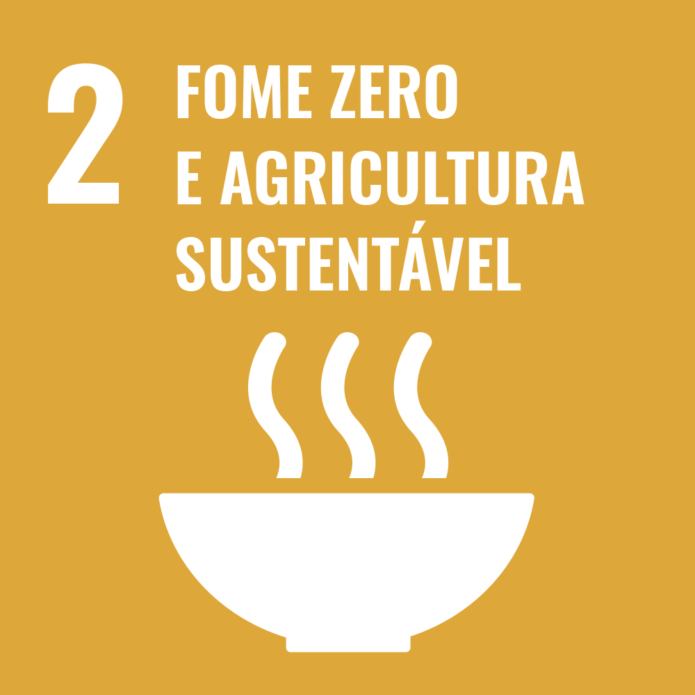
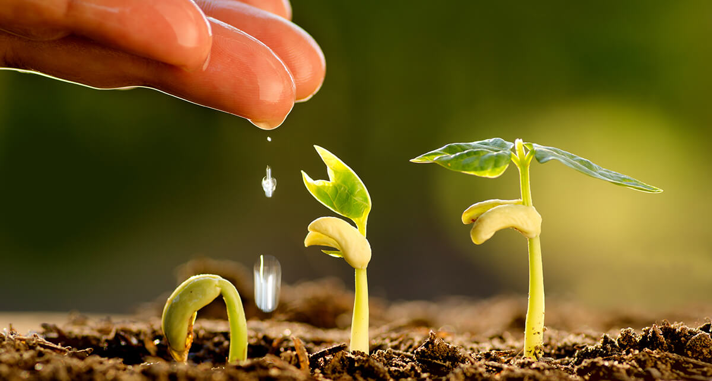

A União das Nações (UN) concebeu 17 metas, as ODSs, em 2015 através da iniciativa conhecida como "Compacto Global", que envolve seus 193 países membros.
Em termos gerais, o objetivo principal é atingir o crescimento sustentável até 2023 por meio de esforços coletivos e individuais que abrangem todos os setores da sociedade.
O ODS 2, em particular, aborda a erradicação da fome e a promoção da agricultura sustentável. O propósito é assegurar que todas as pessoas tenham acesso a alimentos "confiáveis, nutritivos e suficientes" em qualquer época e lugar, independentemente do país.
Com esse objetivo em mente, o ODS 2 estabelece cinco metas específicas para guiar as ações dos países membros em direção ao cumprimento do objetivo.
O Instituto Conecta Brasil adota os ODSs do Compacto Global como referência para impulsionar as transformações estruturais tão necessárias em nosso país.
Como mencionado previamente, o Objetivo de Desenvolvimento Sustentável (ODS) 2 estabelece metas específicas com o intuito de alcançar o objetivo central de "erradicar a fome, garantir a segurança alimentar, melhorar a nutrição e promover a agricultura sustentável". Confira:
2.1. Até 2030, eliminar a carência alimentar e assegurar o acesso universal a alimentos seguros, nutritivos e suficientes durante todo o ano, especialmente para indivíduos em situação de pobreza e vulnerabilidade, incluindo crianças;
2.2. Até 2030, erradicar todas as formas de desnutrição, incluindo o cumprimento, até 2025, dos objetivos internacionalmente acordados para combater o nanismo e a caquexia em crianças com menos de cinco anos, além de suprir as necessidades nutricionais de adolescentes, mulheres grávidas e lactantes, e idosos;
2.3. Até 2030, duplicar a produtividade agrícola e a renda dos pequenos produtores de alimentos, especialmente das mulheres, povos indígenas, agricultores familiares, pastores e pescadores, por meio do acesso equitativo e seguro à terra, recursos produtivos, insumos, conhecimento, serviços financeiros, mercados e oportunidades para agregar valor e empregos não agrícolas;
2.4. Até 2030, estabelecer sistemas sustentáveis de produção de alimentos e implementar práticas agrícolas resilientes que aumentem a produtividade e a produção, preservem os ecossistemas, fortaleçam a capacidade de adaptação às mudanças climáticas, a eventos climáticos extremos, como secas, inundações e outros desastres, e melhorem progressivamente a qualidade do solo e da terra;
2.5. Até 2020, preservar a diversidade genética de sementes, plantas cultivadas, animais de criação e domesticados, juntamente com suas respectivas espécies selvagens, através da implementação e gestão adequadas de bancos de sementes e plantas, tanto em âmbito nacional quanto regional e internacional, garantindo igualmente o acesso justo e equitativo aos benefícios decorrentes do uso de recursos genéticos e conhecimentos tradicionais associados, conforme acordos internacionais estabelecidos;
2.a. Aumentar os investimentos, inclusive fortalecendo a cooperação internacional, em infraestrutura rural, pesquisa agrícola, serviços de extensão, desenvolvimento de tecnologia, bem como em bancos de genes de plantas e animais, a fim de ampliar a capacidade de produção agrícola nos países em desenvolvimento, particularmente nos países menos desenvolvidos;
2.b. Corrigir e prevenir restrições ao comércio e distorções nos mercados agrícolas globais, incluindo a eliminação simultânea de todas as formas de subsídios às exportações e de medidas de exportação com efeitos similares, de acordo com as diretrizes da Rodada de Doha para o Desenvolvimento;
2.c. Utilizar medidas para assegurar o adequado funcionamento dos mercados de commodities alimentares e seus.